做當初超級拼命的，印象中好像一個月還是三個星期就做出來了，所有功能都很陽春(好吧！其實我沒有一款遊戲是不陽春的...
現在回想起來，當初的累雖累，但是很有成就感。
一樣來介紹一下故事，讓我們開始遊戲吧！
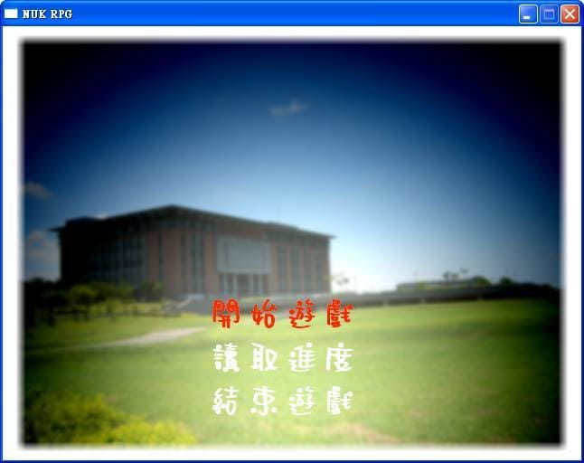
身為電機系的學生，主角不做二想，當然是小電機，他是個可愛的男孩子。
↓大概是長這個樣子
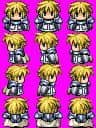
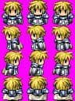
本來在吳老師的實驗室裡面讀書玩耍，趁老師不注意的時候偷溜出去了再來下遇到一個暫居在工學院的西語，為了找出為什麼西語沒有自己的家，兩人開始探查真相。
↓美麗的西語姊姊
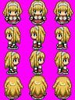
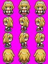
之後再空地遇上了土環，跟他幹了一架，因為他調戲西語。
其實這遊戲也就幹了四場架，第一個是不怎麼重要的小怪─土環，再來是調停管理學院爭吵的時候被捲入的混戰(本來要幫金管調停資管和應經的爭吵，結果和他們打起來了)，第三個是小BOSS亞太，最後一個是陰鐘大魔王。
遊戲是採用半即時制，也就是根據每個人不同的出招速度來下指令，最多四人組隊打怪，大概就像下面的樣子：
管理學院的混戰
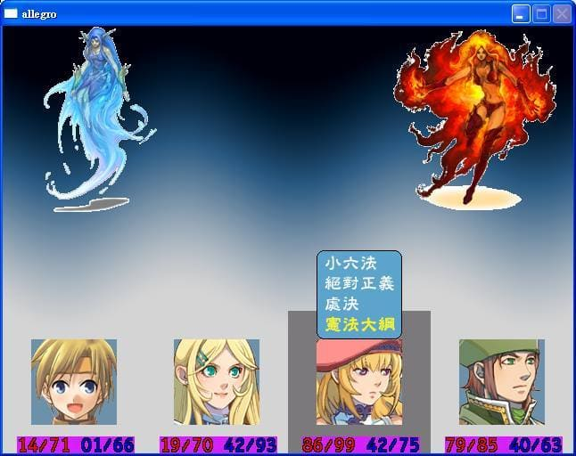
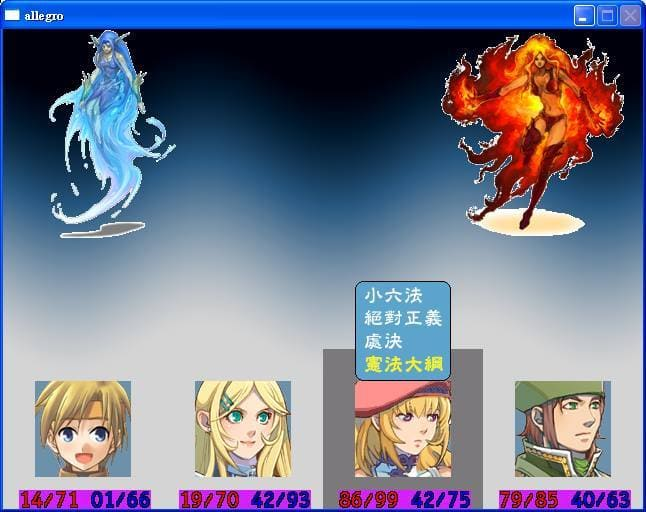
這是其中一場戰鬥的截圖，當初我們設計招式的時候，是以各系的特色下去取名的，並且根據招式來消耗MP(藍色的數字)，受到攻擊的時候會減少HP(紅色的數字)。
當然一不小心殘念的話，就變成這樣啦！請重新來過。
大俠請重新來過

當初在寫的時候，因為時間太趕，並沒有很嚴謹的制定，只要能夠順利結束戰鬥就好了，所以招式寫得很死，當初有想要擴充，不過沒有時間外，日子久了人就懶了。
因為是第一次做這種的RPG遊戲，所以在寫的時候其實想得很單純，可以跑就好了(身為程式人的第一步，管他寫得好不好，可以動就好)。
想當然爾，之後就懶得改了，所以人物在行走的時候看起來只有一個人的樣子，本來是想要做成像仙劍一那種人物會一個接一個走路的感覺。
所以這個版本最終的樣子就變成下面那樣啦！
黃色頭髮的是我們的小電機，粉色頭髮的是另外一個角色─傳創。
遇見傳創
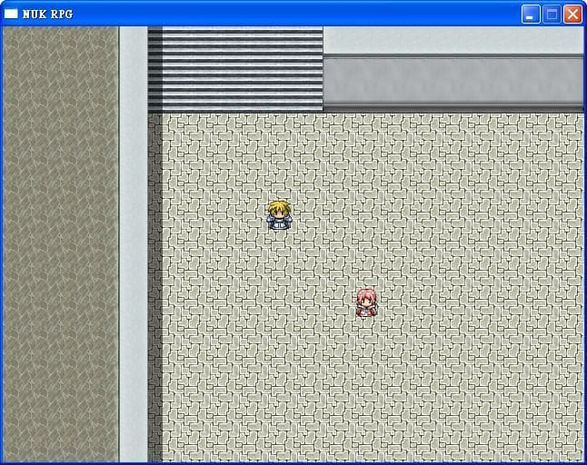
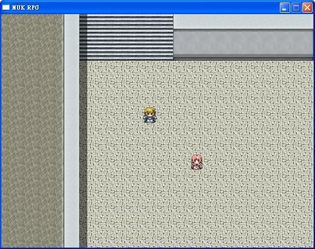
至於主線任務只有一條，當初本來要設計幾個支線劇情的，但是太趕了就放棄了，不過印象中有個任務角色非常機車的躲在廁所寫程式，聽說有人找很久找不到，對，我就是故意的！(被打，誰叫設計那段劇情的時候太想睡了，把「躲在廁所寫程式」打成「躲在程式寫廁所」，所以一怒之下...ry
對！就是這傢伙！好好的電腦教室不待，躲到廁所來了！
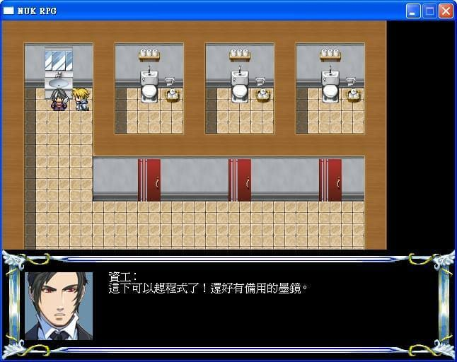
而主線任務的最後就是要打敗我們的陰鐘大魔王，打完他就可以過關了，在此之前，要先幹掉他的手下大將─亞太。
手下大將
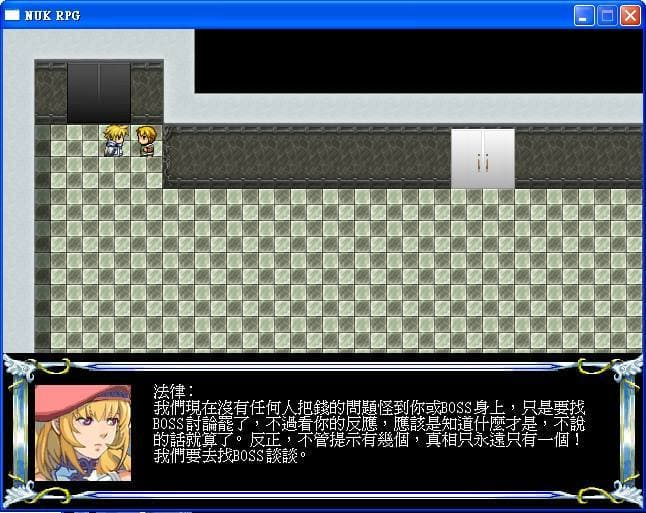
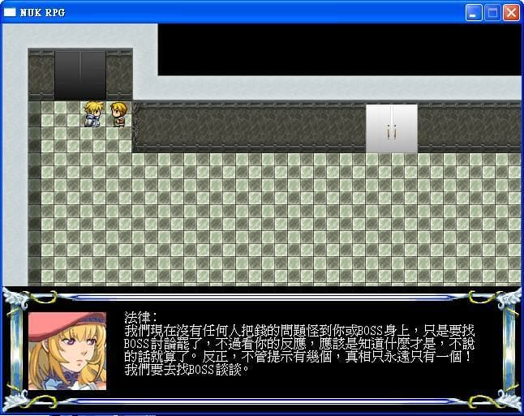
打完亞太之後記得存個檔，因為一上樓就是BOSS了。
ESC的檔案紀錄
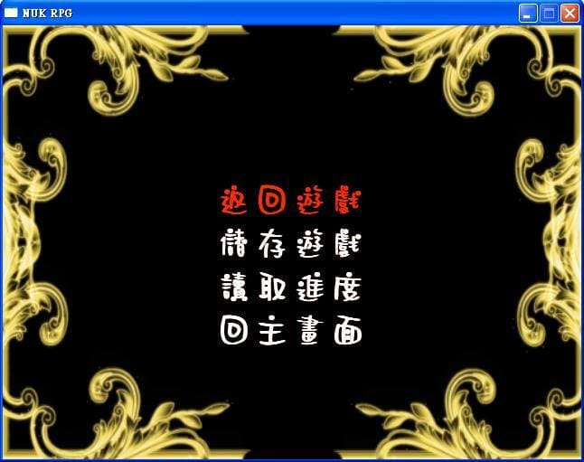
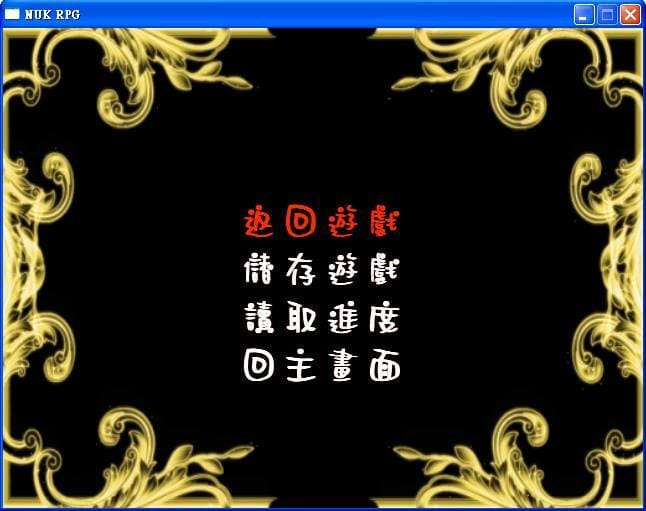
會有一段動畫與對白，揭露陰鐘的陰謀。
BOSS大戰前夕
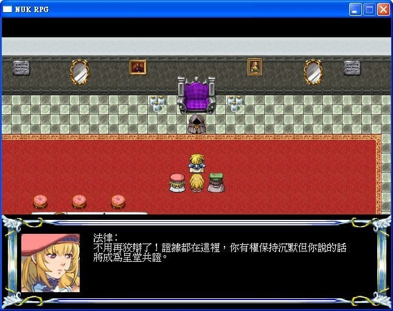
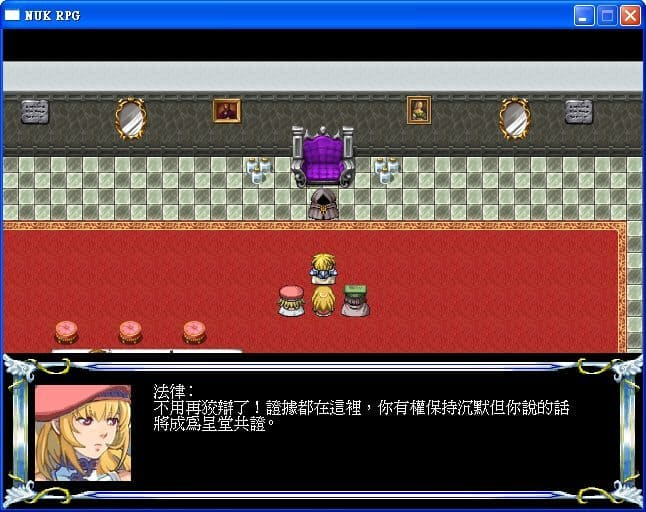
當然在打完之後，世界恢復和平...好吧！其實是高大恢復和平，Happy Endding！
雖然說本來預計最後打完魔王，還會來一段高大介紹或是劇情動畫之類的，不過還是那句，沒有時間啊！！！(仰天
最後一役結束
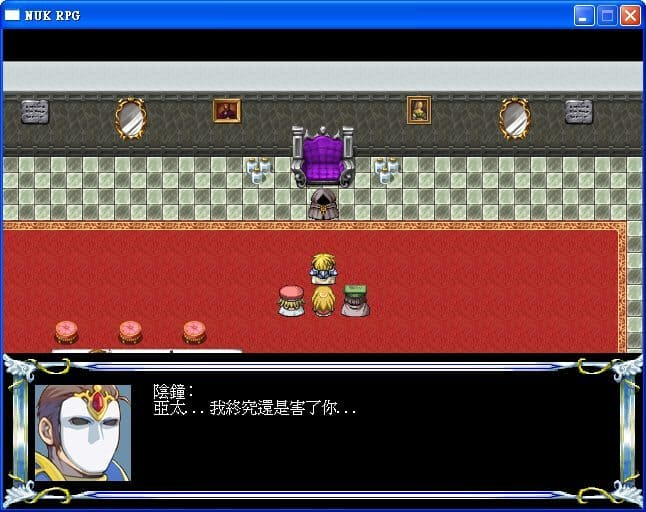
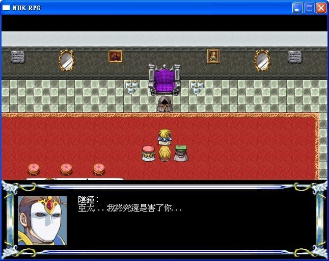
這部遊戲其實只有在成發的時候拿出來給人玩一下，之後就被我束之高閣了...
畢竟裡面除了很單調之外，BUG還是有一些(當然正常玩是沒問題的)。
有來試玩的同學表示：你這個是要拿去賣的嗎？
沒有那麼高級啦！雖然我也想做出一款很好玩的遊戲，但是架不住人懶阿～
尤其是那個圖片，還好學姊有辦法自己生出來，不然我也幫不了她。
而且之前做秋之狂響的那個文字系統是問學長要的，結果在幫學姊做專題的時候，整個函式庫不知道為什麼用起來特別不順(原諒我那時候對於code的靈敏度真的還不夠)
特地去問學長好多次，真的很感謝他願意這樣一點一點地教我，幫我debug，因為那時的我還看不太懂他的code...
麻煩他挪出不少時間和我討論，我都要不好意思了...奇怪！明明就不是我的專題啊！？
那時候剛好我又迷上的盜墓筆記，所以硬是在裡面放了一些盜墓梗，下一篇來放當時的截圖好了。(不要偷偷安麗)
現在在寫這篇的時候，還真是圖到用時方恨少，那時候在demo報告或是發噗的時候，竟然沒有多截一點圖，導致現在沒有安裝那個遊戲，都沒辦法截圖了...明明就記得有哪些地方可以截的說(望天
所以說，隨時截圖是好習慣！(X)
恩...最後閒扯了這麼多，其實這部遊戲已經很久沒被我動過了
但是他對我的意義是真的蠻重大的，如果不是他，我大概不會對做遊戲有這麼大的怨念，真要說的話，他是我第一部功能基本上算齊全的遊戲，之前那部秋之狂響，有幾幕是組員做的，風格不統一以外，其實結局根本沒有，只有放一張圖阿！(飛毆
雖然說他只存活到學姊成果發表結束，其實他應該是有V2的版本啦！
不過這個V2就之後有空再來介紹吧！
題外話，在成果發表會結束後，大家都笑說：這是神奇寶貝吧！
這明明就是用RPG製作大師繪製的地圖啦！QQQQ